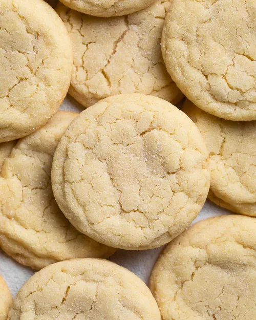

Desert Recipes
Sugar Cookie Recipe

-
Unsalted Butter: I always stick with unsalted butter because the amount of salt in salted butter can vary quite a bit between different brands. By using unsalted butter, you control the amount of salt in your cookies. If you only have salted butter, just reduce the salt to a tiny pinch or 1/8 teaspoon.
-
Granulated Sugar: In most of my cookie recipes I like to add brown sugar, but for these cookies, we’re sticking with just granulated sugar. You’ll want to beat the butter and sugar together for 1 to 2 minutes until they’re well combined before adding the rest of the ingredients.
-
Vanilla Extract: For a little extra flavor!
-
All-Purpose Flour: The base of any sugar cookie recipe. This cookie dough is very thick, so you’ll want to make sure you spoon and level your flour. I have a full post on how to use the spoon and level method here.
-
Baking Powder & Salt: For a little lift and flavor.